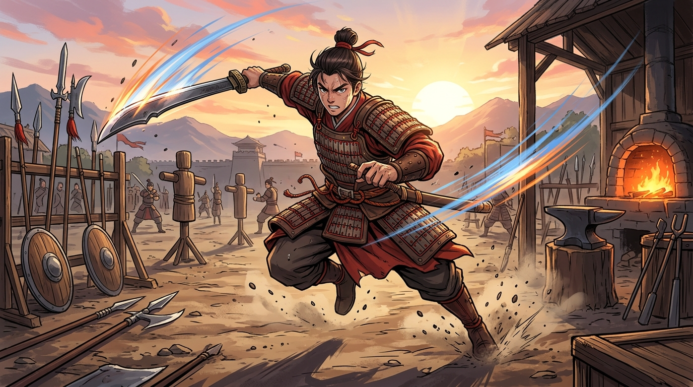
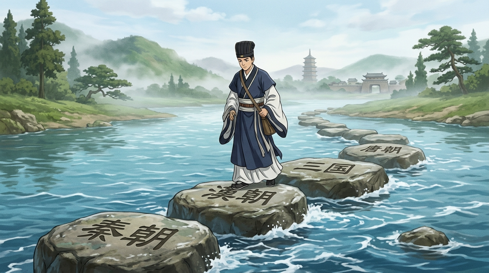
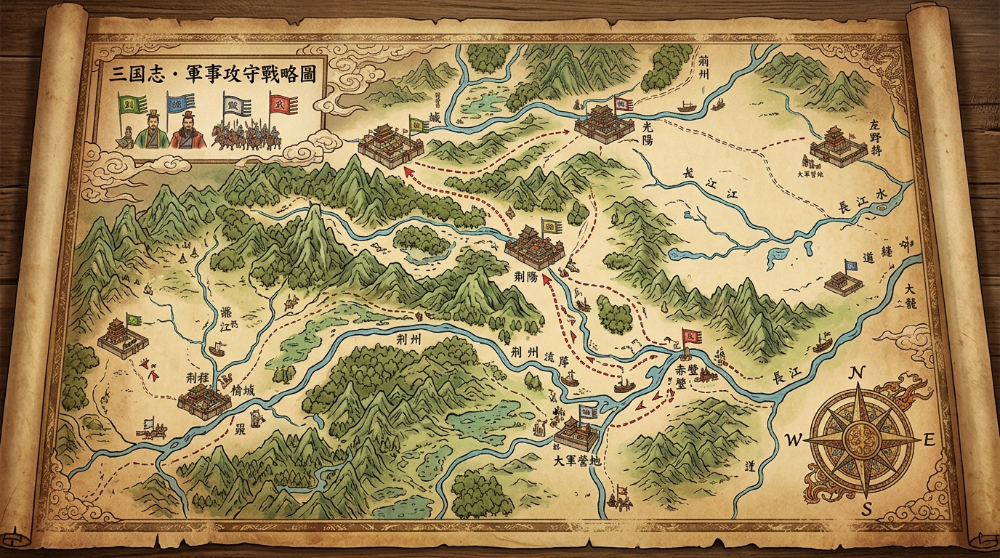
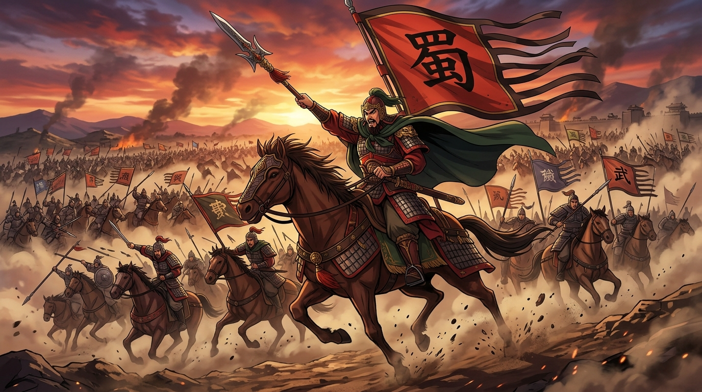
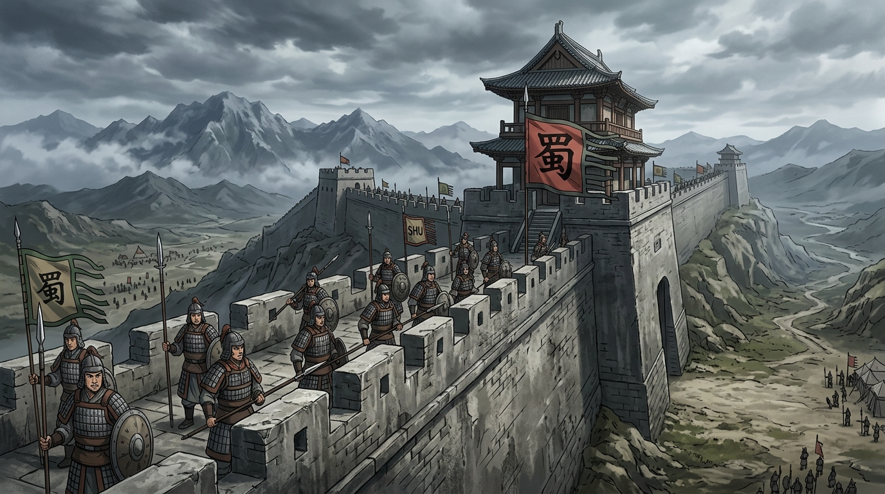
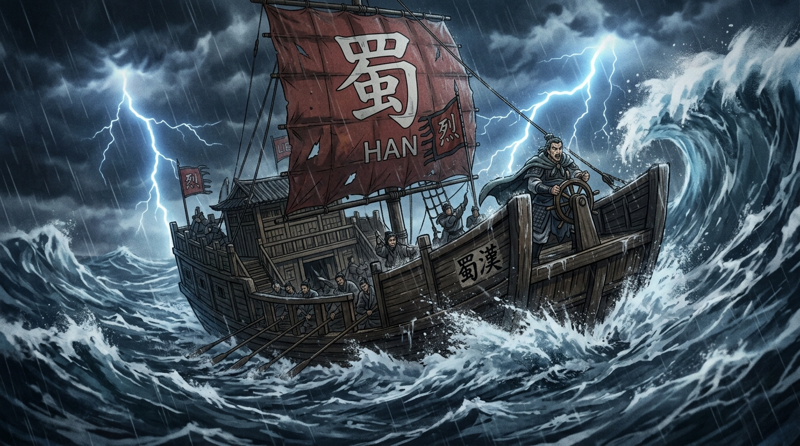
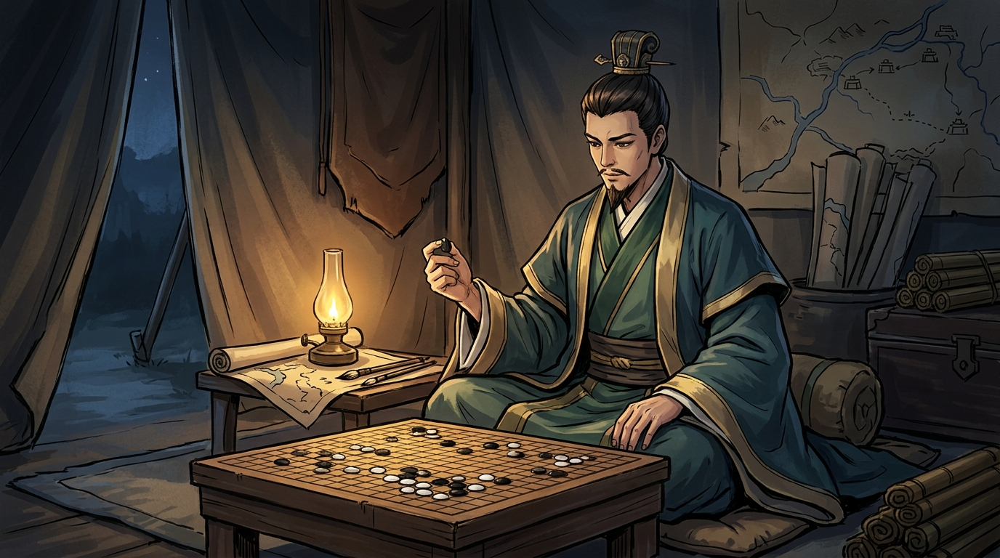
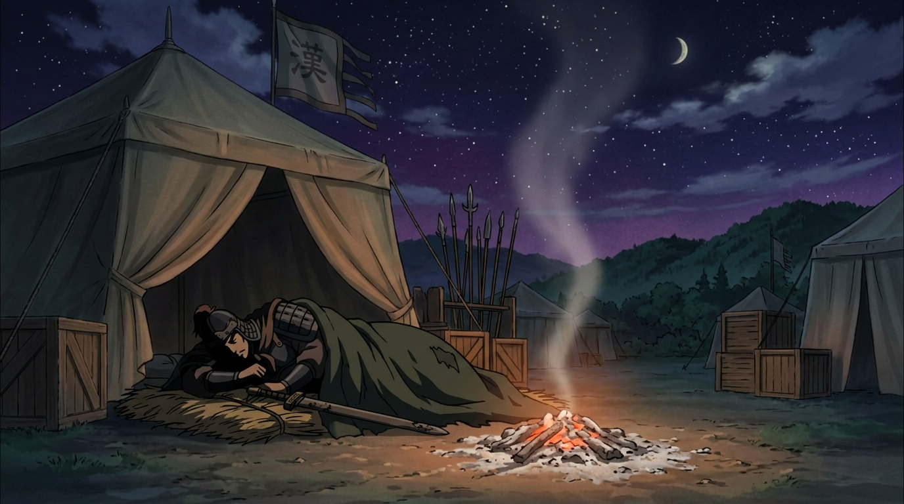

그대여. 이제 그대는 '배움'이라는 천하를 평정하기 위한 긴 출정에 오르려 한다. 그 길은 멀고, 도중에 '시험'이라는 수많은 관문이 그대를 시험할 것이다.
허나 두려워 말라. 관문은 그대를 막으려 세워진 것이 아니라, 그대가 얼마나 자랐는지를 비추는 거울일 뿐이다. 한 관문을 넘을 때마다 그대의 칼은 더 날카로워지고, 그대의 기개는 더 단단해지리라.
내 일찍이 천하의 형세를 읽어 길을 열었듯, 이 병법서에 배움과 시험을 다스리는 모든 계책을 담아 그대에게 전하노라. 외우려 하지 말고, 한 장(章)씩 몸에 새겨 그대의 것으로 삼으라.
승패는 하늘에 달렸으나, 준비는 사람에게 달렸다(謀事在人). 점수에 일희일비하지 말고, 오직 그대가 세운 계책을 끝까지 밀고 나아가라. 그리하면 천하는 반드시 그대의 것이 되리라.
삼가 이 글을 올리며, 그대의 출정에 천운이 함께하기를.
— 군사 제갈량 공명 孔明
"장수가 동요하면 만 명의 군사가 무너진다. 칼을 들기 전에, 먼저 그대의 마음부터 평정하라."
가슴이 두근거리는 것은 그대의 정신이 전투를 위해 깨어나는 신호다. "망했다"가 아니라 "준비됐다는 증거"로 받아들이라.
모르는 문제를 만나도 당황 말라. 그대에게 험한 길은 다른 모든 이에게도 똑같이 험하다. 그대만 막힌 것이 아니다.
점수란 하늘의 뜻이라 다스릴 수 없으나, "내가 세운 계책을 끝까지 실행했는가"는 그대가 다스릴 수 있다. 다스릴 수 있는 것에 집중하면 마음이 고요해진다.
흔들려도 좋다.
다시 중심을 잡는 힘, 그것이 명장의 그릇이다.

"공부란 머리에 '넣는 것'이 아니라, 필요할 때 '꺼내는 힘'을 기르는 것이다. 꺼내본 적 없는 칼은 녹슨 칼이니라."
예습(20%) → 수업(100%) → 당일 복습(15분)의 리듬을 타라.
한 단원이 끝나면 책을 덮고 빈 종이에 배운 것을 모두 적으라. 막히는 곳이 곧 그대 진영의 허점이다.
배운 것을 가족에게 장수가 군략 논하듯 설명해보라. 막힘없이 설명 못 하면 아직 그대의 것이 아니다.
읽기만 하는 것은 훈련이 아니다.
꺼내어 휘둘러야 비로소 그대의 무기가 된다.

"사람의 기억은 본디 흐르는 강물처럼 사라지게 마련. 허나 디딤돌을 제때 밟으면, 누구든 강을 건널 수 있느니라."
전부 못 밟아도 좋다.
'당일 복습 + 주말 정리'만 해도
이미 상위 10%의 진영이니라!
틀린 문제는 3일·7일·15일·30일 간격으로 다시 치라. 네 번 연속 이겨야 비로소 그 적을 명부에서 지운다.

"산을 칠 때와 강을 건널 때의 병법이 어찌 같으랴. 과목의 지형을 읽어, 그에 맞는 계책을 쓰라."
개념 → 예제 → 유형 → 오답 재풀이. 답을 맞히기보다 "왜 이 풀이를 택했는가"를 설명할 수 있어야 한다.
'왜 이것이 정답이고 저것은 오답인가' 근거를 찾는 훈련. 영어는 단어가 팔 할, 매일 누적 반복이 필수다.
무작정 외우지 말고 원인 → 과정 → 결과의 흐름으로 꿰어라.

"전투는 무용(武勇)만으로 이기지 못한다. 시간을 다스리는 자가 전장을 다스리느니라."
한 문제에 2~3분 이상 막히면 과감히 손절! 강한 적 하나에 매달려 약한 적 셋을 놓침이 최악의 패다.
문제를 읽으며 동시에 보기를 베어내라. '항상·절대·모두' 같은 극단의 표현은 함정일 확률이 높다.

"단 한 점의 성(城)이 천하의 승패를 가른다. 빈칸으로 성문을 열어주는 것은 항복과 같으니라."
암산으로 답만 쓰지 말고 모든 단계를 줄 맞춰 적으라. 그 과정 하나하나가 부분 점수의 근거(증좌)다.
핵심 단어를 문장 맨 앞에 먼저 세워라. 채점하는 장수의 눈에 즉시 띄게 하라.
빈칸은 무조건 0점!
모르는 적도 끝까지 비벼서 한 줄이라도 써라.
마지막 5~10분은 검토에. 수학·과학은 단위(cm/m)와 음수 부호(-)를 의식적으로 순찰하라.

"적벽의 큰 바람도 미리 대비한 자에게는 기회였다. 위기에 대비된 진법이 있으면, 폭풍도 그대를 흔들지 못한다."
긴장되거나 실수를 발견해 손이 떨릴 때 펼쳐라.
스트레스 기운(코르티솔)이 가라앉아 다시 침착함을 되찾는다.
"아직 시간 있다. 충분히 고칠 수 있다"고 스스로에게 호령하라. 여럿 밀렸다면 수정테이프보다 OMR 교체 요청이 빠를 수 있다.
한 과목 끝나고 벗과 답을 맞추지 말라. 혼란과 불안만 부른다. "끝난 전투는 과거, 내가 다스릴 것은 다음 전투뿐"이라 되뇌라.

"패배는 부끄러움이 아니라 스승이다. 어찌하여 졌는지를 아는 장수는, 같은 패배를 두 번 겪지 않느니라."
틀린 문제를 그냥 베끼지 말고, '왜 졌는지'를 가려내라.
오답에서 그대만의 군령을 뽑아내라.
오답노트는 '패배의 기록'이 아니라
'승리를 위한 병서(兵書)'이니라.

"활도 늘 당겨두면 부러진다. 그대 자신을 돌보는 것 또한 천하를 도모하는 큰 병법이니라."
시험 전날 밤샘은 최악의 패착이다. 최소 7시간 이상 자야 낮에 익힌 병법이 장기 기억의 창고로 옮겨진다.
휴대폰을 진영 밖으로 치우고, 정해진 자리에서 25~50분 집중 후 5~10분 휴식. 진영을 바꾸면 집중이 따라온다.
"100점을 얻어서가 아니라, 세운 계책을 끝까지 실행해서 자랑스럽다." 이런 치하가 다시 일어서는 힘을 기른다.
잘 자고 잘 쉬는 그대 또한
천하를 향해 잘 나아가고 있는 것이다.
그대여, 이제 모든 병법을 전하였다. 길은 멀고 관문은 많으나, 이 아홉 가지 계책을 몸에 새긴 그대는 결코 길을 잃지 않으리라.
승패에 일희일비하지 말라. 한 번의 패배가 전쟁의 끝이 아니며, 한 번의 승리가 전부도 아니다. 오직 멈추지 않고 한 걸음씩 나아가는 자가 끝내 천하를 얻는다.
모사재인(謀事在人),
준비는 사람에게 달렸다.
그대의 출정에 천운이 함께하기를.